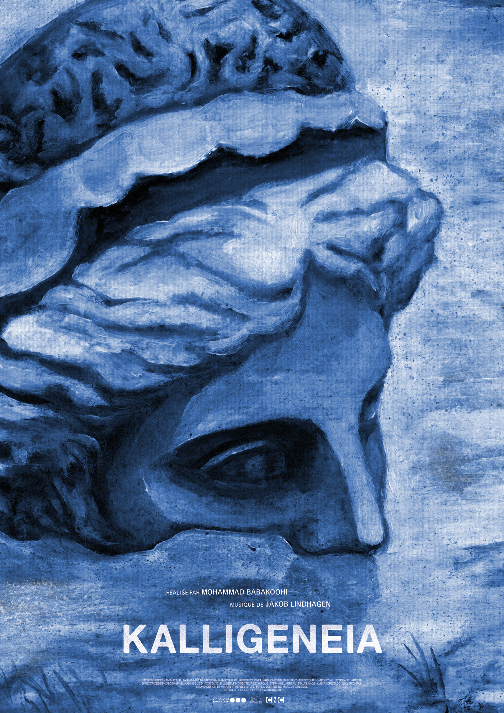
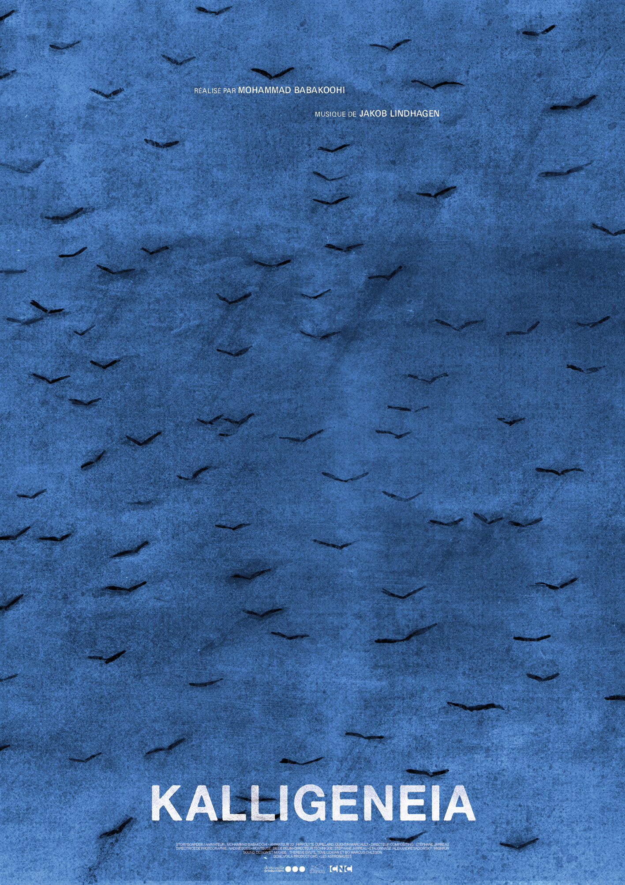

Kalligeneia
Générique / Affiche
Conception de cartons-titres pour le générique + affiches pour le court métrage Kalligeneia, réalisé par Mohammad Babakoohi sur une musique de Jakob Lindhagen. Coproduit par Doncvoilà productions et Les Astronautes. Les affiches sont produites à partir de scènes du film.

